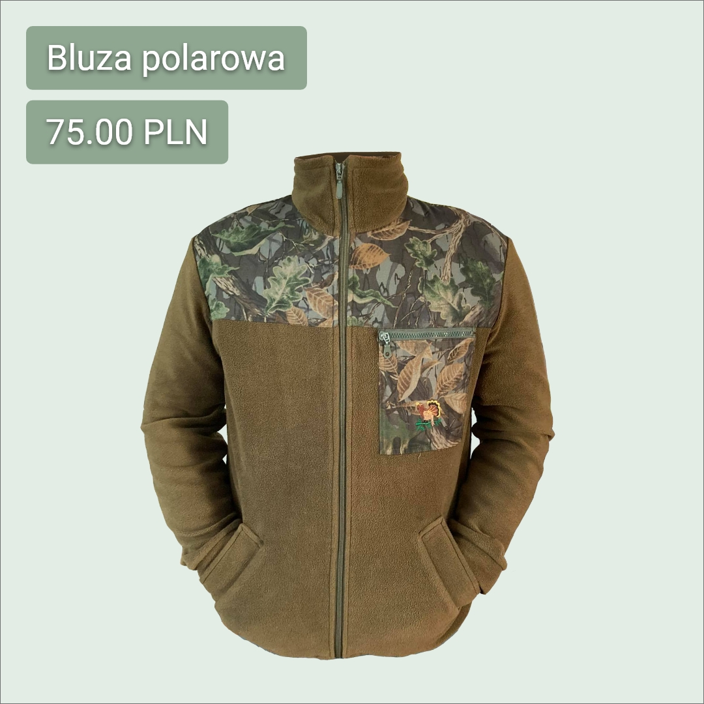

Szycie odzieży
Realizujemy zlecenie odzieży szycia na miarę. Szyjemy:
- kurtki,
- bluzy,
- t-shirty,
- polo,
- spodnie – sportowe, robocze, ochronne oraz usztywniane,
- kombinezony – sportowe, robocze, specjalistyczne (spawalnicze, ochronne),
- kamizelki i bezrękawniki – ocieplane, pikowane, ostrzegawcze, odblaskowe,
- czapki – z daszkiem, ocieplane, kominiarki,
- i wiele innych.
Gramatura do wyboru – 100-350g/m2. Tkaniny, których używamy, są wykonane z najwyższej jakości materiałów. Materiał do wyboru – 100% bawełna, 65% bawełna – 35% poliester lub bawełna z dodatkiem wiskozy, kolor materiału również do wyboru.
Posiadamy szeroką ofertę krojów i wzorów. Nasza odzież jest wygodna i użytkowa – posiada kieszenie wewnętrzne i zewnętrzne, zapięcia na rzepy lub zamki, ocieplacz oraz technologie pozwalające na stałą wymianę powietrza.
Realizujemy również zlecenia na życzenie Klienta. Zapraszamy do kontaktu.
